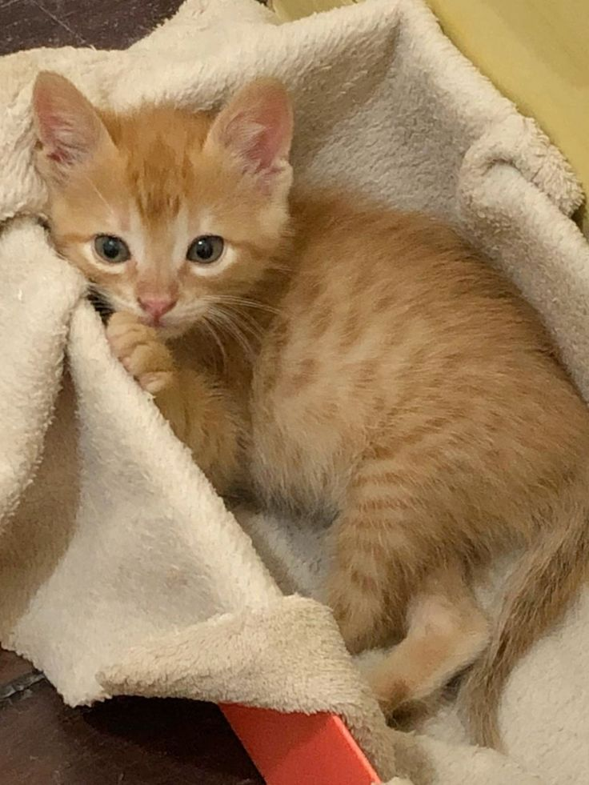

Nuestros Peludos Amigos en Adopción
Max
Especie: Perro
Edad: 2 años
Un enérgico y cariñoso beagle, ideal para familias activas.
¡Adopta a Max!

Luna
Especie: Gato
Edad: 1 año
Una gata tranquila y juguetona, perfecta para compañía.
¡Adopta a Luna!
Rocky
Especie: Perro
Edad: 5 años
Un labrador senior, muy leal y calmado, busca un hogar tranquilo.
¡Adopta a Rocky!